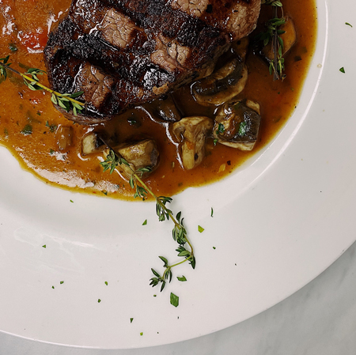
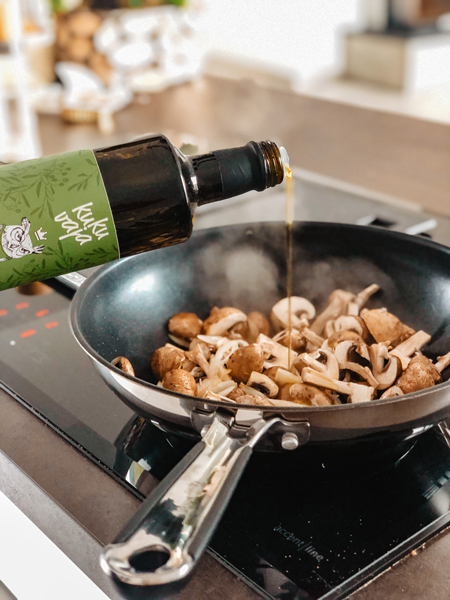
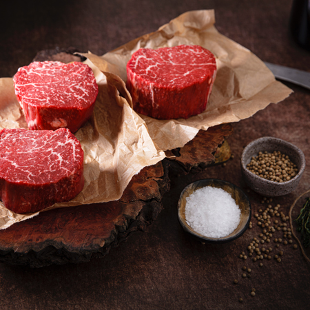
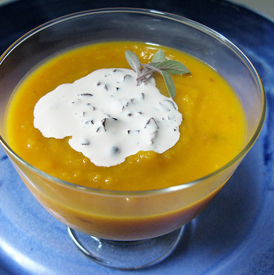
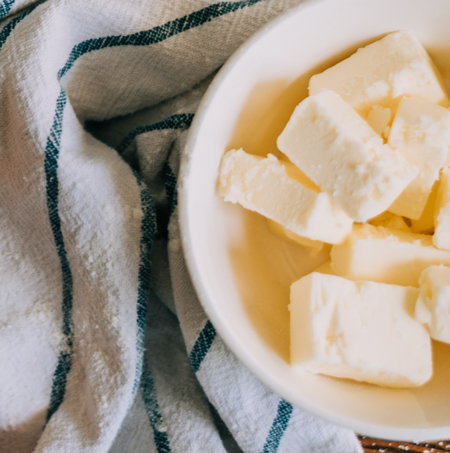
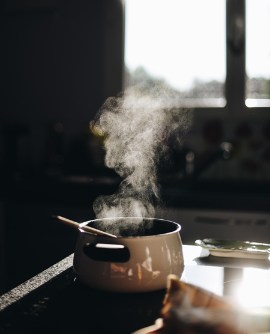

What's
Cooking
Recipes from this month's classes
June 18, 2021
Filet Mignon in Mushroom Wine Sauce
This is a very special filet mignon recipe, but it’s made in one pan and fairly simple to prepare. This is spectacular for any special occasion! I brought this over to my sister’s house and it got eaten fast with rave reviews across the board (despite having to reheat it because by the time I took my pictures, packed it up, drove to my sister’s…) it was still mouthwatering!
I love cooking with wine. Crazy thing is, the bottle of wine that I’m using sells for $7.00 or so at our local grocery store. Wine is an ingredient that has been around for centuries and I love it for cakes, meats, sauces… Cooking with wine adds wonderful depth of flavor to recipes.
Watch How Here:
Ingredients for Filet Mignon Recipe:

Perperation:
1. Place a large heavy-bottomed pan over medium/high heat and melt in 2 Tbsp butter and 1 Tbsp oil. Add thickly sliced mushrooms and cook 5 min until soft. Stir in onion and cook another 3 minutes. Press in garlic cloves then season with 1/4 tsp salt, 1/4 tsp pepper and 1 Tbsp fresh thyme. Cook another 2 min, stirring constantly until garlic is fragrant, then transfer mushroom mixture to a plate. Wipe the skillet clean with a wet paper towel.
2. Pat dry steaks with a paper towel and season all over with salt and pepper (we use a total of 1 tsp salt and 1/4 tsp pepper).
3. Place the same pan over medium/high heat and add 2 Tbsp butter and 1 Tbsp oil. When butter is hot and finished foaming, add seasoned steaks to skillet and saute, turning over once with tongs, about 3-5 min per side for medium-rare (I cooked 5-6 min per side for medium doneness). If steak is browning too fast, reduce heat to medium. Use tongs to transfer steaks to the plate with mushrooms. Also, keep in mind thinner steaks than these will cook faster and thicker steaks can take longer.
4. Add 1/2 cup Merlot and boil until reduced by half (3 min), scraping the bottom with a spatula to deglaze the pan. Add 1 1/2 cups broth and boil until about 2/3 cup liquid remains (5-6 min). Add 1/2 cup cream and boil until sauce thickens slighly (2 min). Return mushrooms and steak to the pan and heat until warmed through (1 – 2 min). Season sauce to taste with more salt & pepper if desired (I added about 1/4 tsp more salt).
Plate the steak and spoon generous amounts of mushroom sauce over the top. I served this with asparagus and fluffy mashed potatoes.
June 19, 2021
Squash Soup with Gruyère Croutons
This is a very special soup recipe, it’s fairly simple to prepare. This is spectacular for any special occasion! I brought this over to my sister’s house and it got eaten fast with rave reviews across the board (despite having to reheat it because by the time I took my pictures, packed it up, drove to my sister’s…) it was still mouthwatering!
I love cooking with Gruyère. Crazy thing is, the block of cheese that I’m using sells for $4.00 or so at our local grocery store. Wine is an ingredient that has been around for centuries and I love it for cakes, meats, sauces… Cooking with wine adds wonderful depth of flavor to recipes.
Watch How Here:
Ingredients for Squash Soup Recipe:
Ingredients for Croutons
Perperation:
For Soup:
1. Melt butter in large pot over medium heat.
2. Add onion and garlic and sauté until tender, about 10 minutes.
3. Add broth, all squash and herbs; bring to boil.
4. Reduce heat, cover and simmer until squash is very tender, about 20 minutes.
5. Working in batches, puree soup in blender.
6. Return soup to same pot. Stir in cream and sugar; bring to simmer.
7. Season with salt and pepper. (Can be made 1 day ahead. Chill. Rewarm over medium heat before serving.)
For Croutons:
1. Preheat broiler. Butter 1 side of each bread slice.
2. Arrange bread, buttered side up, on baking sheet.
3. Broil until golden, about 1 minute. Turn over. Sprinkle cheese, then thyme and sage over.
4. Sprinkle with salt and pepper. Broil until cheese melts, about 1 minute.
5. Ladle soup into bowls. Top each with croutons and serve.